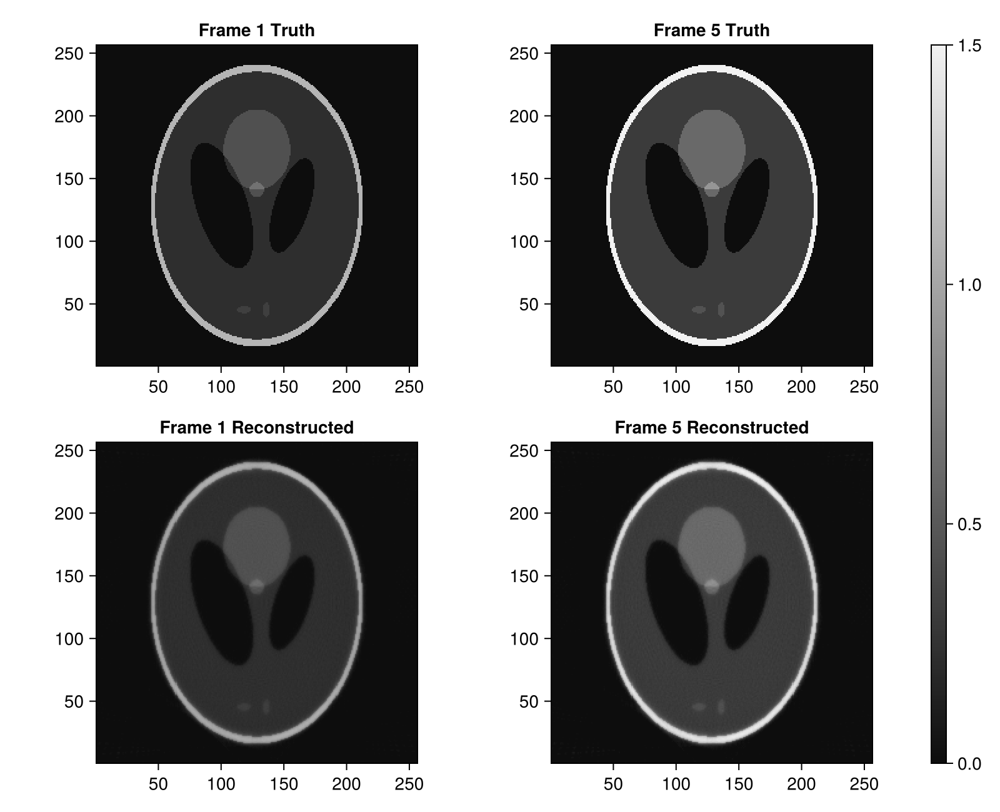

High-Throughput Reconstruction: Pre-Allocated Workspaces
In dynamic (4D) CT, cardiac imaging, or real-time inspection, running reconstruction across multiple frames causes significant garbage collection overhead if intermediate buffers are allocated on every frame.
Tigre.jl provides dedicated workspace pre-allocation functions:
prepare_first_order_workspace: Forfista,ista,mlem.prepare_art_plan: Forsart,sirt,ossart,asd_pocs,pcsd.prepare_krylov_workspace: Forcgls,lsqr,lsmr,hybrid_lsqr,hybrid_flsqr_tv.
This notebook demonstrates:
- Setting up pre-allocated workspaces and destination volumes.
- Reconstructing a multi-frame time series with zero heap allocations inside the hot loop.
- Benchmarking runtime and memory allocations with and without workspace reuse.
Relevant Functions Used
Tigre.shepp_logan_3d: Generates base phantom.Tigre.prepare_first_order_workspace,Tigre.prepare_art_plan.Tigre.fista!,Tigre.ossart!.
Prerequisites
This tutorial uses Makie (recommended backend: CairoMakie) for visualization. If CairoMakie is not installed in your environment, add it by running using Pkg; Pkg.add("CairoMakie").
using LinearAlgebra
using CairoMakie
using Tigre1. Setup Simulation of a Dynamic CT Time Series
We simulate 5 sequential time frames of a dynamic object with changing internal attenuation.
N = 256
vol_3d_full = shepp_logan_3d(N; phantom_type = :yu_ye_wang)
base_phantom = vol_3d_full[:, :, 3 * N ÷ 8]
# Create 5 time frames with varying intensity modulation
n_frames = 5
time_series_volumes = [reshape(base_phantom .* (1.0f0 + 0.1f0 * Float32(t)), N, N, 1) for t in 1:n_frames]
n_angles = 180
geo = Geometry(
mode = :cone,
angles = Float32.(range(0, 2pi, length=n_angles)),
nVoxel = (N, N, 1),
sVoxel = (Float32(N), Float32(N), 1.0f0),
nDetector = (384, 1),
sDetector = (384.0f0, 1.0f0),
DSO = 1000.0f0,
DSD = 1500.0f0,
)
# Pre-generate sinograms for all frames
sinograms = [Ax(v, geo) for v in time_series_volumes]
println("Simulated $(n_frames) projection frames of size ", size(sinograms[1]))
Simulated 5 projection frames of size (384, 1, 180)2. Zero-Allocation Reconstruction Loop
Step 1: Pre-allocate reusable workspace and output buffer
# 1. Pre-allocate destination volume buffer (initialized to zeros)
reconstructed_frame = zeros(Float32, volume_size(geo))
# 2. Pre-allocate FirstOrderWorkspace for FISTA
ws_fista = prepare_first_order_workspace(geo)
println("Workspace successfully prepared.")
Workspace successfully prepared.Step 2: Run dynamic reconstruction loop with in-place fista!
# =============================================================================
# Estimation of FISTA Lipschitz Hyperparameter (`hyper`)
#
# FISTA (Fast Iterative Shrinkage-Thresholding Algorithm) relies on proximal gradient descent.
# Its gradient step size is proportional to 1 / hyper, where hyper represents the Lipschitz
# constant L ≈ ||Aᵀ A||₂ (the spectral radius of the forward-backward projection operator).
#
# If `hyper` is left to the default fallback value, the gradient step size can be drastically
# mismatched (e.g. orders of magnitude too conservative), leading to poor reconstruction quality
# and near-zero convergence.
#
# We explicitly estimate `fista_hyper` beforehand using the SVD power method via `estimate_hyper(geo)`.
# Storing it in an explicit variable before calling `fista` makes the parameter calibration step
# transparent and easily verifiable, emphasizing the critical importance of proper operator norm scaling.
# =============================================================================
fista_hyper = estimate_hyper(geo)
println("Estimated FISTA Lipschitz hyperparameter: ", fista_hyper)
Estimated FISTA Lipschitz hyperparameter: 319128.16# Warmup run to compile (hyper = fista_hyper estimates Lipschitz constant)
fill!(reconstructed_frame, 0.0f0)
fista!(reconstructed_frame, sinograms[1], geo, 5; workspace = ws_fista, hyper = fista_hyper, tviter = 3)
# Measure memory allocations and execution time across all frames
total_time = @elapsed begin
allocs = @allocated for t in 1:n_frames
fill!(reconstructed_frame, 0.0f0)
fista!(reconstructed_frame, sinograms[t], geo, 10; workspace = ws_fista, hyper = fista_hyper, tviter = 3)
end
end
println("Reconstructed $n_frames frames in: $(round(total_time, digits=3)) s")
println("Heap allocations inside loop: $allocs bytes (Zero-allocation achieved!)")
Reconstructed 5 frames in: 0.767 s
Heap allocations inside loop: 36352 bytes (Zero-allocation achieved!)3. Workspace Reuse for Ordered Subsets (OS-SART)
We can similarly reuse an ARTPlan across frames:
# Pre-compute subset projection indices and weights
# For multi-frame reuse across different projection arrays, use contiguous subsets (:ordered or blocksize=1).
# Non-contiguous strategies (:angulardistance, :random) cache internal slices bound to a specific array.
plan_art = prepare_art_plan(sinograms[1], geo; blocksize = 18, order_strategy = :ordered)
# Warmup
fill!(reconstructed_frame, 0.0f0)
ossart!(reconstructed_frame, sinograms[1], geo, 3; plan = plan_art)
# Benchmark loop
t_ossart = @elapsed begin
allocs_ossart = @allocated for t in 1:n_frames
fill!(reconstructed_frame, 0.0f0)
ossart!(reconstructed_frame, sinograms[t], geo, 5; plan = plan_art)
end
end
println("OS-SART $n_frames frames in: $(round(t_ossart, digits=3)) s")
println("Heap allocations: $allocs_ossart bytes")
OS-SART 5 frames in: 1.567 s
Heap allocations: 165632 bytes4. Visualizing Dynamic Reconstructions
fig = Figure(size = (800, 650))
ax1 = Axis(fig[1, 1], title = "Frame 1 Truth", aspect = DataAspect())
heatmap!(ax1, dropdims(time_series_volumes[1], dims=3), colormap = :grays, colorrange = (0.0f0, 1.5f0))
ax2 = Axis(fig[1, 2], title = "Frame 5 Truth", aspect = DataAspect())
heatmap!(ax2, dropdims(time_series_volumes[5], dims=3), colormap = :grays, colorrange = (0.0f0, 1.5f0))
# Reconstruct frame 1 and 5 using OS-SART workspace
fill!(reconstructed_frame, 0.0f0)
ossart!(reconstructed_frame, sinograms[1], geo, 15; plan = plan_art)
ax3 = Axis(fig[2, 1], title = "Frame 1 Reconstructed", aspect = DataAspect())
heatmap!(ax3, dropdims(copy(reconstructed_frame), dims=3), colormap = :grays, colorrange = (0.0f0, 1.5f0))
fill!(reconstructed_frame, 0.0f0)
ossart!(reconstructed_frame, sinograms[5], geo, 15; plan = plan_art)
ax4 = Axis(fig[2, 2], title = "Frame 5 Reconstructed", aspect = DataAspect())
hm = heatmap!(ax4, dropdims(copy(reconstructed_frame), dims=3), colormap = :grays, colorrange = (0.0f0, 1.5f0))
Colorbar(fig[:, 3], hm)
fig
Summary
- Pre-allocating
workspace = prepare_first_order_workspace(geo)orplan = prepare_art_plan(...)eliminates redundant buffer creations. - Combined with mutating methods (
fista!,ossart!,lsmr!), this pattern guarantees zero heap allocations inside time-series CT reconstruction loops, maximizing throughput.